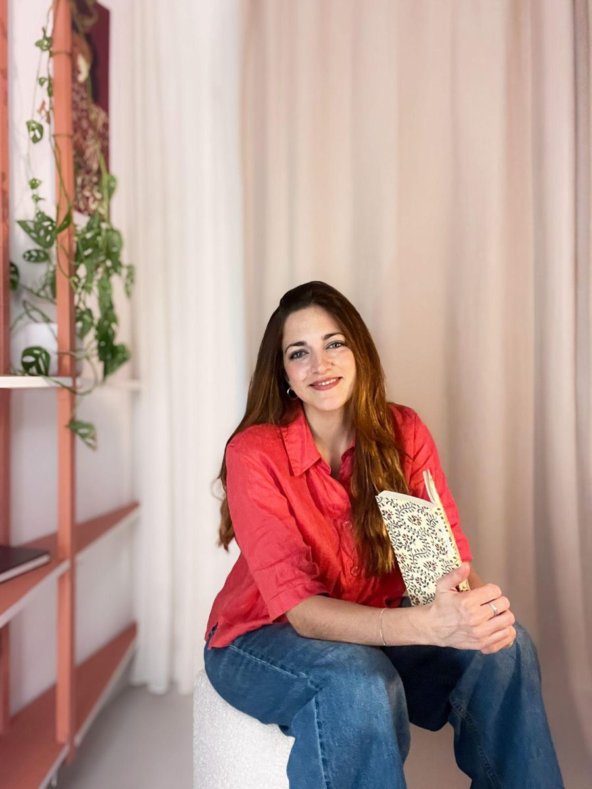

Giulia
Neuro-arquitecta & interior designer
Arquitecta e interiorista especializada en arquitectura participativa y neuroarquitectura. Desde la escucha profunda, ayuda a que cada hogar sea reflejo auténtico de quien lo habita, articulando el espacio en micro-ambientes con mobiliario fijo a medida.